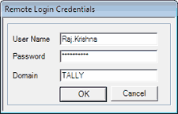

User Name: Enter the Windows user name to access the remote server. The user accessing the remote server need to have administrative rights on the remote system to access SIS services.
Password: Enter the password.
Domain: Enter the domain name to which the specified Windows user belongs.